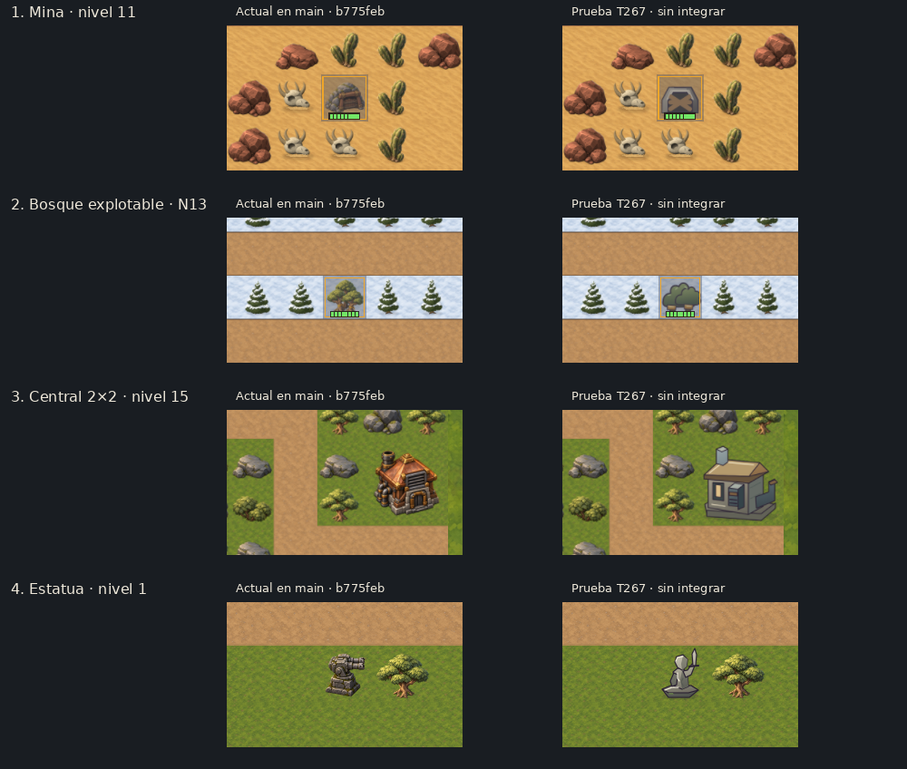

T267 · revisar antes de elegir
Las imágenes de la izquierda muestran el juego tal como está en main (b775feb); las de la derecha aplican las pruebas de T267 sobre la misma partida. Se capturó con Godot 4.7.2 a 1280×720 después de integrar M79 y M80. No son assets finales ni están integradas.
Qué significa “integrado” acá: solo el lado izquierdo está en el juego. El lado derecho sustituye unas piezas dentro de una escena de revisión. La Central y la estatua son bocetos; mina y bosque prueban conexiones de SVG existentes. La propuesta vieja de escombro conserva la A anterior a M80, así que la retiré de esta comparación hasta actualizarla a H G2.
Comparar mapas completos
Estado integrado
Comparaciones por pieza
Las capturas están a escala nativa. En el informe original tenés el diagnóstico completo de los seis niveles, Cuadrilla, agua/hielo e íconos. Las pruebas seleccionadas no implican aprobación.

Abrir cada captura completa
Pendiente
- Elegir, pieza por pieza, mantener el actual, usar esa dirección de diseño o pedir otra propuesta.
- Actualizar primero la muestra de escombro para usar H G2; la versión con A queda fuera de la decisión.
- Definir qué otras deudas de T267 querés exigir para V1. La Cuadrilla, el agua/hielo, el resto de adornos y los íconos no se evalúan con estas cuatro pruebas.